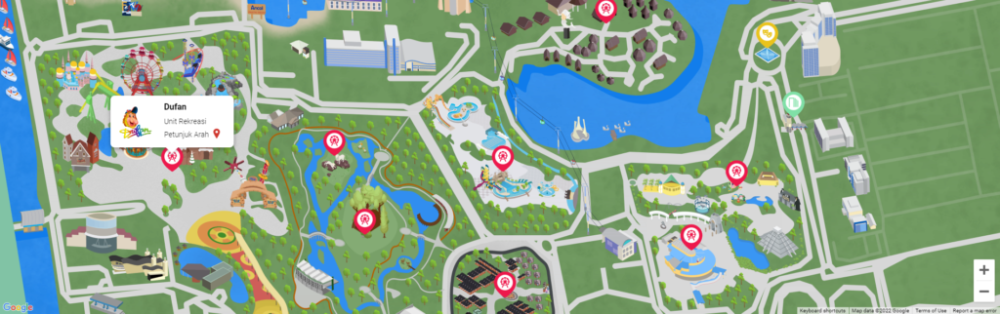
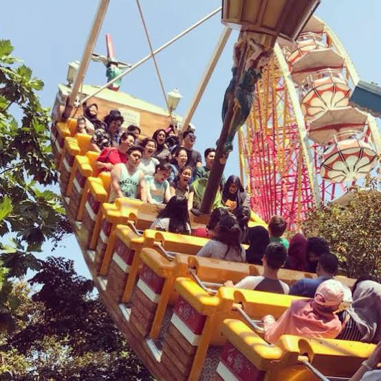
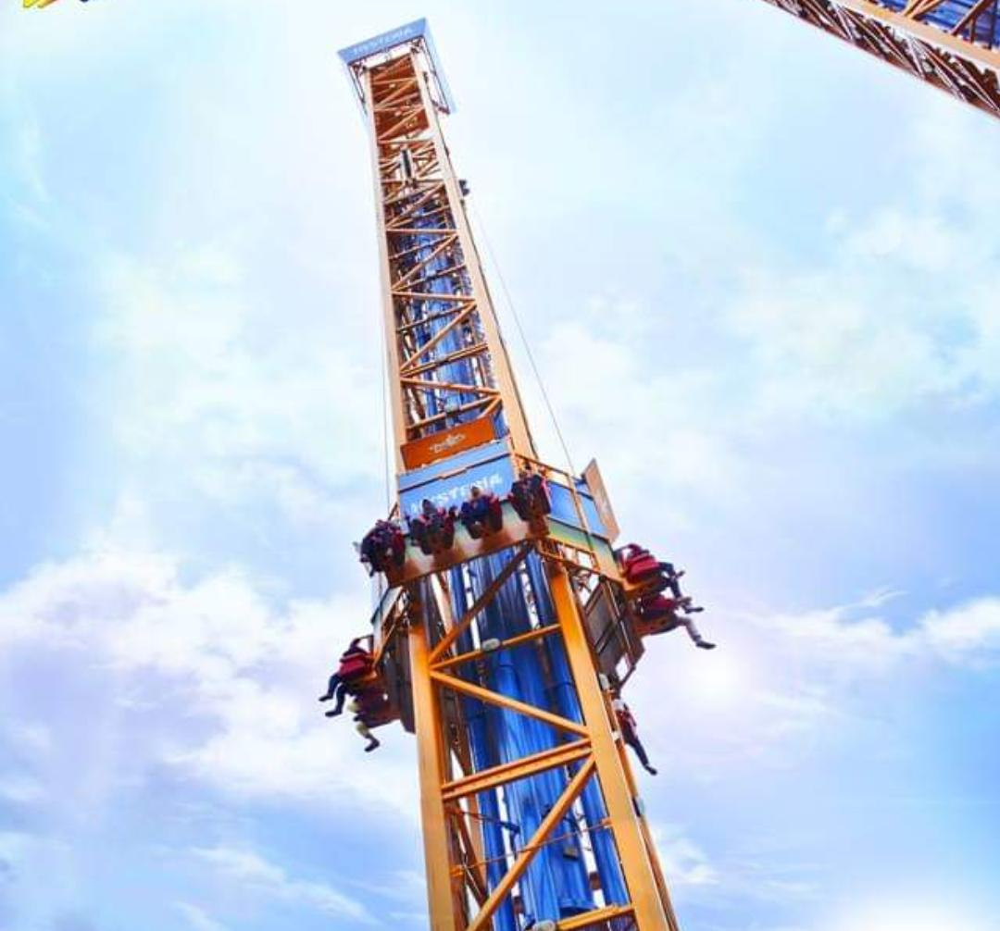
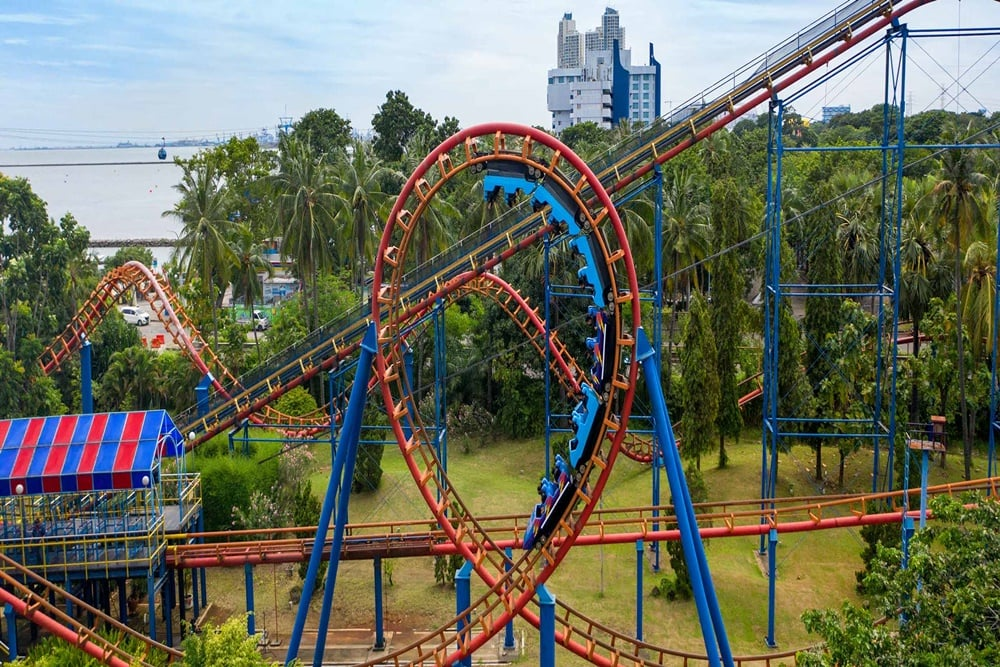
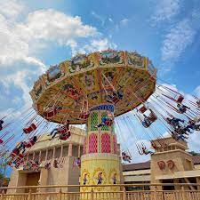

DUFAN ANCOL
Sejak awal abad ke-17, Kawasan Ancol telah dilirik oleh Gubernur Hindia Belanda - Adriaan Valckenier, sebagai salah satu destinasi wisata menarik yang berpotensi besar untuk dikembangkan.
Namun, sehubungan dengan fokus Pemerintah yang saat itu masih tertuju pada Perang Kemerdekaan, maka pengembangan potensi wisata Ancol terabaikan. Seiring berjalannya waktu, Ancol kembali mendapat perhatian dari Presiden RI yang pertama, Ir. Soekarno, dimana pada akhir Desember 1965, Beliau memerintahkan dan menunjuk Gubernur DKI Jakarta, Dr. H. Soemarno Sosroatmodjo menjadi Pelaksana Pembangunan dan Pengembangan Daerah Ancol untuk mengembangkan Ancol sebagai sebuah destinasi wisata. Pengembangan proyek Ancol terus berjalan hingga tahun 1966 dan di bawah kepemimpinan Gubernur DKI Jakarta - Ali Sadikin, seluruh pengerjaan seluruh proyek Ancol beralih kepada Badan Pelaksana Pembangunan (BPP) Proyek Ancol yang kemudian menjadi cikal bakal berdirinya PT Pembangunan Jaya. Pada 19 Oktober 1966, dalam kapasitasnya sebagai BPP Proyek Ancol, PT Pembangunan Jaya berperan dalam mempersiapkan seluruh tahapan perencanaan proyek, mulai dari penyiapan konsep pengembangan, strategi, master plan hingga kegiatan pembangunan lainnya, termasuk strategi pemasaran.
Seiring berjalannya waktu, BPP Proyek Ancol mulai melakukan pembenahan secara internal menyusul perubahan status badan hukumnya menjadi PT Pembangunan Jaya Ancol (“Ancol”) melalui Akta Perubahan No. 33 tanggal 10 Juli 1992. Menyusul pembenahan tersebut, sebanyak 80% kepemilikan saham Jaya Ancol dikuasai oleh Pemda DKI Jakarta dan sebesar 20% sisanya dimiliki oleh PT Pembangunan Jaya. Di tengah ekspansi bisnis yang kian pesat dan perekonomian domestik yang kian membaik, PT Pembangunan Jaya Ancol berupaya memperkuat struktur permodalannya dengan melakukan penawaran umum saham perdana kepada publik (Initial Public Offering/”IPO”) dengan melepas 80.000.000 lembar saham biasa di Bursa Efek Indonesia (BEI) pada 2 Juli 2004. Menyusul aksi korporasi tersebut, PT Pembangunan Jaya Ancol resmi menyandang status Perusahaan Terbuka dengan komposisi kepemilikan saham Ancol otomatis mengalami perubahan dimana Pemda DKI Jakarta masih bertindak sebagai pemegang saham utama namun total kepemilikan sahamnya 72% saham Ancol, PT Pembangunan Jaya memiliki 18% dan publik memiliki sisanya sebesar 10%.
Tujuan
Adapun tujuan dibangun Dufan Ancol adalah sebagai berikut:
- Menyediakan hiburan dan rekreasi.
- Menarik wisatawan.
- Memberikan pendidikan dan budaya.
- Kontribusi ekonomi.
Visi & Misi
Visi
Menjadi perusahaan pengembang properti dengan kawasan wisata terpadu, terbesar dan terbaik di Asia Tenggara yang memiliki jaringan serta rekreasi terluas.
Misi
Sebagai komunitas pembaharuan kehidupan masyarakat yang menjadi kebanggaan bangsa.
Senantiasa menciptakan lingkungan sosial yang lebih baik melalui sajian hiburan berkualitas yang berunsur seni,
budaya dan pengetahuan, dalam rangka mewujudkan komunitas "Life Re-Creation" yang menjadi kebanggaan bangsa.
Denah

Gambar denah
Beberapa wahana Outdoor di Dufan Ancol

Kora-kora

Komidi putar

Niagara gara

Rumah miring

Arung jeram

Hysteria

Halilintar

Ontang-anting
Wahana Outdoor Dufan Ancol
1 / 5

Ice age
4 / 5

Kereta misteri
❮
❯
- Wahana Ice Age :
wahana perpaduan antara niagara dan istana boneka. Saat masuk, pengunjung akan dipersilakan duduk di sebuah perahu berkapasitas 20 orang. Suasana di dalam didesain mirip dengan masa es, layaknya di film Ice Age
- Wahana Kontiki : bagian dari wahana Ice Age. pengunjung akan di bawa ke petualangan zaman es dengan kapal Es yang berputar. Bersama para karakter Ice Age.
- Wahana Playground : wahana permainan anak terbesar di Indonesia. Dengan luas 900 m2, wahana ini dilengkapi dengan berbagai fasilitas, diantaranya adalah trampoline, soft play toys, wall climbing, futsal games, play panel, sand pool, sliding ride, block puzzle, education toys, dan mini rides
- Wahana Kereta Misteri : Wahana dalam ruang yang mengambil tema suasana Amerika diabad 19. Diakhir perjalanannya, pengunjung akan dikejutkan oleh sosok Serigala yang besar. Wahana ini berluaskan 5.000 m2 dan dilengkapi oleh 3 rangkaian kereta yang akan jalan bersamaan. Dimana per kereta memiliki kapasitas 20 orang.
- Wahana Zigzag : wahana untuk keluarga yang terdiri dari beberapa mobil yang bertenaga listrik. Wahana ini dimainkan dengan mengarahkan mobil untuk menghindari mobil lainnya.
Informasi Umum
Rute Transportasi Umum
| No |
Jenis Transportasi Umum |
Rute |
| 1 |
MRT |
a) Naik MRT kemudian turun di Stasiun Blok M BCA
b) Setelah itu, lanjutkan perjalanan dengan Busway Transjakarta dari Halte Blok M di koridor 1 (Blok M-Kota)
c) Kemudian, transit di halte Monas
d) Setelah itu, kamu bisa naik Transjakarta di koridor 2 (Pulo Gadung-Harmoni), lalu turun di Halte Harmoni
e) Berikutnya, naik Transjakarta di koridor 5H (Harmoni-Ancol)
f) Tempat wisata Dufan berada tidak jauh dari halte busway Ancol.
|
| 2 |
Transjakarta |
Koridor 5: Kampung Melayu-Ancol
Koridor 5D: PGC-Ancol
Koridor 5E: Kampung Rambutan-Ancol
Koridor 5H: Harmoni-Ancol
|
Jam Operasional
| Senin |
10.00 - 17.00 |
| Selasa |
10.00 - 17.00 |
| Rabu |
10.00 - 17.00 |
| Kamis |
10.00 - 17.00 |
| Jum'at |
10.00 - 17.00 |
| Sabtu |
10.00 - 19.00 |
| Minggu |
10.00 - 19.00 |
Alamat
Jl. Lodan Timur No.7, Ancol, Kec. Pademangan, Jakarta Utara, Daerah Khusus Ibukota Jakarta 14430
Harga Tiket
| Annual Pass Dufan (Ecard) + 1x kunjungan Reguler Ancol Bonus Voucher Merchandise |
Rp 350.000 |
| 3 Months Pass Dufan (Ecard) + 1x kunjungan Reguler Ancol Bonus Voucher Merchandise |
Rp 275.000 |
| Six Months Pass Dufan (Ecard) + 1x kunjungan Reguler Ancol Bonus Voucher Merchandise |
Rp 295.000 |
| Double Fun - Reguler Dufan + Ancol Bonus Sea World, Samudra, Atlantis dan Jakarta Bird land Bonus Voucher Merchandise |
Rp 280.000 |
Kelas 5A
Yasmin (112102510012).